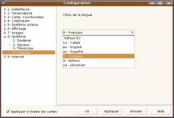

Versie 3 beta 0.1.2
Programma vertaling en online plaatjes
 Het programma kan nu vertaald worden naar iedere taal. Met dank aan vrijwillige vertalers is het programma nu beschikbaar in Engels, Catalaans, Italiaans, Spaans, Oekraïens, Frans en Nederlands.
{kind=link}
Als je interesse hebt om dit programma naar je eigen taal te vertalen, lees dan http://www.ap-i.net/skychart/nl/vertalingen
Het help systeem is aangepast. Het gebuikt nu (vanaf harddisk) dezelfde bestanden als die beschikbaar zijn op de online wiki van http://www.ap-i.net/skychart
Het is momenteel nog niet veel, maar het is aan jullie om het te verbeteren!
 Online afbeeldingen
Online afbeeldingen
Dit is dezelfde functie als eerder beschikbaar met gebruik van de RealSky CD-ROM, nu heb je alleen maar een Internet verbinding nodig.
Selecteer het gebied van de hemel dat je wilt bekijken en klik de “DSS” knop om de afbeelding van het overeenkomstige gebied binnen te halen en af te beelden
 Je kunt kiezen welke survey je wilt gebruiken door dat in te stellen via Instellingen \ Afbeeldingen \ DSS RealSky. Een aantal interessante bronnen zijn al voor je geconfigureerd, maar je kunt er nog meer toevoegen via Instellingen \ Configureer het programma \ Internet \ online DSS afbeeldingen.
Je kunt kiezen welke survey je wilt gebruiken door dat in te stellen via Instellingen \ Afbeeldingen \ DSS RealSky. Een aantal interessante bronnen zijn al voor je geconfigureerd, maar je kunt er nog meer toevoegen via Instellingen \ Configureer het programma \ Internet \ online DSS afbeeldingen.
Catalogus samenstellings-tool CatGen is nu ingevoegd binnen het hoofdprogramma. Je kunt deze functie starten met de “CatGen” knop bij de Catalogi-instellingen.
Je kunt nog steeds binaire catalogi samenstellen zoals in de voorgande versies, maar het is ook mogelijk je catalogi als tekstbestanden samen te stellen. Tekstbestand-catalogi zijn bedoeld om de externe catalogi te vervangen in versie 2.7. Het voordeel van een tekstbestand-catalogus boven een binaire catalogus is dat je de de catalogus niet opnieuw hoeft samen te stellen wanneer de gegevens veranderen. Een typische toepassing is bijvoorbeeld een lijst te onderhouden van recente novae die je op de kaart afgebeeld wilt hebben.
Internet Proxy kun je indien nodig ingestellen via Configuratie/Internet/Proxy
Eigen Labels kun je aan de kaart toegevoegen via het rechter muisklik-menu.
Een nieuwe schuifbalk laat je op iedere kaart direct navigeren over de gehele hemel. Wanneer je ver inzoomt en je wilt navigeren, dan kun je beter via de pijltjes op einden van de schuifbalk klikken. Je kunt ook in de schuifbalk zelf klikken om het beeld wat op te verschuiven. Direct schuiven met de schuifbalk cursor kan bij een hoog zoomniveau onhandig voelig zijn.
Simulatie Labels kun je kiezen via het Configuratie/Datum - Tijd/Simulatie menu. Je kunt nu de hoeveelheid labels kiezen en de weer te geven informatie instellen.
Veel bugs gerepareerd dankzij jullie testen. De nieuwe bug tracker werkt goed, van de 180 raporteringen zijn er op dit moment 160 opgelost.
Ongeveer 300 patches zijn toegevoegd aan de source repository voor deze uitgave. Als je een gedetailleerde log wil lezen, dan kun je hier kijken http://skychart.svn.sourceforge.net/viewvc/skychart/trunk/?view=log
Het heeft meer tijd gekost dan gebruikelijk om van 3.0.1.0 tot 3.0.1.2 te komen. Dit kwam omdat alle tests gedaan zijn op de ontwikkelingsversie 3.0.1.1 die gedurende deze periode ongeveer iedere week herzien werd.